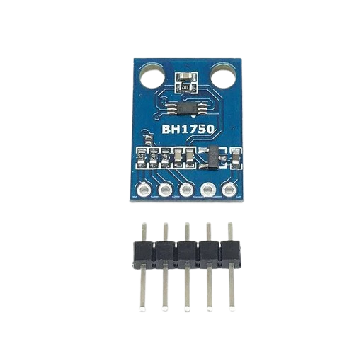

CATÁLOGO • SENSOR 06
SENSOR BH1750
Sensor digital de intensidade luminosa que fornece a iluminância diretamente em lux.

Categoria
Luminosidade
Conceito
Sensor digital de intensidade luminosa que fornece a iluminância diretamente em lux.
Princípio de funcionamento
Um elemento fotossensível e circuito de conversão interno transformam a luz incidente em uma leitura digital acessível pelo barramento I2C.
Principais especificações técnicas
2,4–3,6 V no CI; medição em lux; resolução configurável conforme modo de medição; endereço I2C configurável.
Tipo de sinal
I2C
Interface principal: I2C Digital.
Aplicações industriais ou IoT
- Iluminação inteligente, automação predial, agricultura, controle de brilho e monitoramento ambiental.
Exemplo de utilização em um projeto
Conectar o BH1750 a um ESP32 e ajustar automaticamente a iluminação de uma sala com base na iluminância em lux.
Fabricantes ou modelos comerciais
ROHM BH1750FVI; módulos BH1750.
Integração
O sensor pode ser conectado a Arduino, ESP32 ou Raspberry Pi conforme sua interface elétrica e protocolo. Em um projeto IoT, o dispositivo de controle pode processar a leitura localmente e enviar os dados por Wi-Fi, Ethernet, MQTT ou outro meio de comunicação adequado.
Atenção: módulos didáticos como os listados aqui não devem ser tratados automaticamente como sensores industriais certificados. Verifique tensão, corrente, isolamento, grau de proteção e faixa do modelo antes de uma instalação real.
Fluxo de uso
1
O sensor interage com o fenômeno físico.
2
O circuito transforma a grandeza em sinal.
3
Arduino, ESP32, Raspberry Pi ou CLP lê o sinal.
4
O sistema usa o dado para monitorar ou controlar.